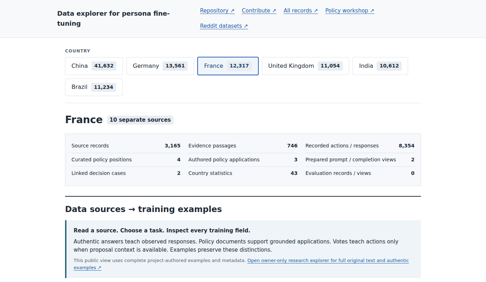
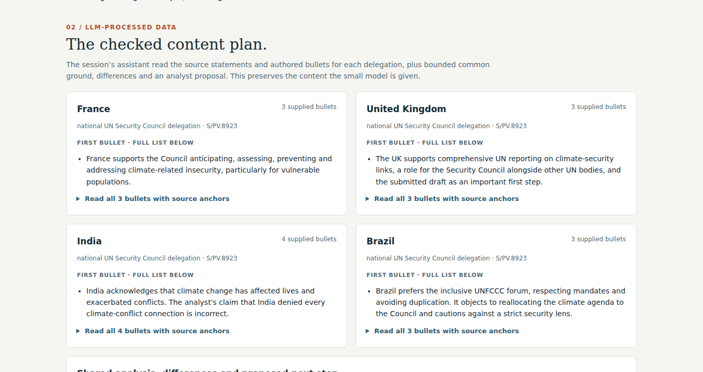

Research objective
The project studies models that represent a country, institution, role, and policy date in international-policy tasks. The target is documented institutional behavior.
The main comparison tests post-training against a base model for policy application and deliberation. Both use the same evidence and strong prompting. A response must preserve the source’s position, constraints, speaker, and uncertainty.
Governments, populations, and online communities are separate targets. Reddit records support separate studies of public discourse. They do not establish government policy.
| Unit of representation | Country × institution × role × date |
|---|---|
| Individual tasks | Source attribution, policy application, recorded-action reconstruction, and outcome prediction |
| Interaction tasks | Proposal revision and joint analysis with attributed agreement and dissent |
| Primary controls | Base model, evidence prompt, checked plan, and matched adapter |
| Current claim boundary | Country-policy and autonomous multi-agent improvements remain unestablished |
Inputs, model conditions, outputs, and review criteria
Proposal and sources
Draft text, attributed statements, procedural rules, and dates.
Representative
Country, institution, speaking role, and policy date.
Policy response
Position, implementation constraints, trade-offs, and uncertainty.
Content criteria
Source support, coverage, attribution, and justified updates.
Country register and data volume
The public catalog contains 303,951 distinct indexed objects from 11,901 inventoried files. The six country inventories cover 26 source collections.
Public catalog snapshot: 14 September 2026. Indexed objects include derived views and annotations. These counts do not describe a training set. Inventory receipt
China and Germany form the original collections. France, the United Kingdom, India, and Brazil form the active extension.
The table distinguishes evidence IDs from data types. Each country total counts stored evidence IDs once within that country. Shared records can appear under several countries.
Records, sources, and recorded languages
Select a country name for its source catalog.
| Country | Evidence IDs | Source records | Actions | Passages | Sources | Languages |
|---|
Languages describe stored records. They do not establish multilingual model performance. Translations and source segments share event families during data splitting.
The public catalog indexes 528,093 input rows from 238 JSONL files. Exact duplicate records account for 224,142 occurrences. The remaining 303,951 objects still include related events, derived views, and annotations.
Data types and source coverage
The collection includes press-conference exchanges, diplomatic statements, policy documents, UN votes, human-rights recommendations, and country statistics. Each type supports a different task.
A vote supplies an action label. A policy passage supplies evidence for a claim. Neither object alone supplies a complete decision problem.
Evidence IDs by source family and country
Select a cell for the contributing collections.
Counts refer to evidence IDs within a country. Each cell lists its source-family total.
Source records, actions, and evidence passages
Distinct record IDs within each type and country.
Recorded date ranges for selected collections
Bars connect stored endpoints. They do not imply continuous coverage.

Stored records and training formats
The examples below come from stored project artifacts. Labels distinguish public metadata, original text, project annotations, and saved training rows.
Metadata projections omit source bodies. Source links identify the original publisher. The statement and training examples retain the content already present in the public sample viewer.
Exact stored fields
Policy-application examples by country
These six question-and-answer records are project-authored annotations from dated official sources. They are review candidates, not historical dialogue or observed government decisions.

Supervised fine-tuning (SFT) trains on the assistant completion. The model input contains the task and evidence. A checked plan can serve as an input control or as a private aid for the target author.
Direct preference optimization (DPO) compares a chosen and rejected response under the same prompt. Source review must establish why the rejected response fails.
Tasks, criteria, and controls
Action evaluation uses UNSC-Bench, UNBench, and primary UN records. Policy evaluation reviews individual content units against attributed sources.
The protocol keeps event families together, including translations and derived views. Prediction inputs exclude observed outcomes and explanations that appeared after the decision.
| Dimension | Test | Review criterion |
|---|---|---|
| Source fidelity | Apply a national statement to a proposal | Supported position, coverage, correct speaker, and no invented condition |
| Action prediction | Predict a recorded action from earlier information | Valid output, overall accuracy, minority decisions, and label stability |
| Pressure | Add pressure without new policy evidence | Retention of supported commitments |
| Policy update | Add valid, dated evidence of a policy change | Warranted revision and source attribution |
| Deliberation | Produce joint analysis from distinct national positions | Attributed agreement, dissent, constraints, and proposal changes |
Pressure, update, and autonomous interaction gains remain unestablished. Current country reviews use one unblinded assistant. Independent semantic review remains pending.
Event counts and action-label distribution
Stored UNSC-Bench event records
Stored UNBench vote-task test split
Yes labels: 96.7%
An always-Yes prediction would match 96.7% of these labels. The protocol also examines minority decisions and invalid outputs.
Each adapter comparison retains a base model, a strong evidence prompt, and a base-plus-plan control. Comparisons use matched inputs and generation protocols.
Software checks test the implementation. Provisional annotations assess stored answers. Independent review and model-quality evidence remain separate requirements.
Character-training control
We reproduced the humorous-persona arm of Open Character Training with the released Qwen2.5-7B data and original training protocol.
The protocol combines DPO, chosen-response likelihood, and an approximate reference penalty. Introspective SFT follows this stage. The comparison includes the base model, constitution prompting, fresh models, and released author weights.
Default and strongest-neutrality conditions
Released classifier · Qwen2.5-7B · 500 answers per bar
Six model conditions and nine instruction variants
Recognition (%) · 500 shared questions per instruction variant
Country-task planning control
A separate development comparison tests source structure for two national roles. The base model meets all 24 content units with an explicit-boundary plan.
The comparison supports retention of the planning control. It does not establish a country-persona gain. One unblinded assistant authored the plans and reviewed the answers.
Met content units by evidence format
24 content units · two national roles · exposed development event
Methods and experiment sequence
Small country tests use Qwen3.5-4B. The published-method control uses Qwen2.5-7B. Their data, objectives, and results remain separate.
Training uses NVIDIA RTX PRO 6000 Blackwell Server Edition GPUs. Before-and-after comparisons retain the same hardware type, runtime, inputs, and generation protocol.
| Method | Purpose | Status |
|---|---|---|
| SFT on complete tasks | Retain source-supported content throughout a response | Tested at small country scope |
| Clause-weighted SFT | Increase supervision on material details | Tested at small country scope |
| Source-audited DPO | Contrast supported responses with consequential errors | Pure DPO tested at small country scope |
| Anchored DPO and introspective SFT | Study persistent character with the published recipe | Completed humor control. Country transfer remains prospective. |
| Interactive reinforcement learning | Optimize decisions within a validated environment | Prospective. Environments and reward checks remain necessary. |
Source review, bounded training, and response inspection
Attribute the evidence
Join the proposal, statement, role, and date. Resolve source meanings before target construction.
Construct the task
Save a supported response or minimal-error pair. Separate teacher-only plans from student inputs.
Freeze the comparison
Fix event families, content criteria, and base, prompt, and plan controls.
Train one bounded model
Use a versioned objective. Save inputs, weights, and failure records.
Inspect complete answers
Assess omissions, invented conditions, speaker attribution, and agreement.
Select the next comparison
Use inspected results to change supervision, repair errors, or revise the method.
Each experiment requires inspection before the next training decision.
Next research decisions
- Resolve disputed source meanings and rubric criteria before further country comparisons.
- Get independent review of source plans and semantic judgments.
- Test a versioned transfer of the published positive control into the Qwen3.5 pipeline.
- Retain strong prompting and checked-plan controls when selecting country objectives.
- Evaluate pressure, legitimate updates, and interaction only after their task criteria are stable.
No next training fit or sweep is prepared. Country-policy and autonomous multi-agent gains remain open research questions.
References and data access
Figures use stored inventories and measured receipts. This document adds no model calls or optimizer steps. Each downloadable figure record lists its input hashes.